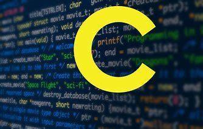
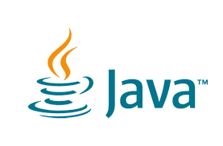

Types of programming languages
The aim of this list of programming languages is to include all notable programming languages in existence, both those in current use and historical ones, in alphabetical order
c language
Overview
Dennis Ritchie (right), the inventor of the C programming language, with Ken Thompson Like most procedural languages in the ALGOL tradition, C has facilities for structured programming and allows lexical variable scope and recursion. Its static type system prevents unintended operations. In C, all executable code is contained within subroutines (also called "functions", though not strictly in the sense of functional programming). Function parameters are always passed by value. Pass-by-reference is simulated in C by explicitly passing pointer values. C program source text is free-format, using the semicolon as a statement terminator and curly braces for grouping blocks of statements.
History
Early developments Timeline of language development Year C Standard[9] 1972 Birth 1978 K&R C 1989/1990 ANSI C and ISO C 1999 C99 2011 C11 2017/2018 C18 The origin of C is closely tied to the development of the Unix operating system, originally implemented in assembly language on a PDP-7 by Dennis Ritchie and Ken Thompson, incorporating several ideas from colleagues. Eventually, they decided to port the operating system to a PDP-11. The original PDP-11 version of Unix was also developed in assembly language.
Data types
The type system in C is static and weakly typed, which makes it similar to the type system of ALGOL descendants such as Pascal.[29] There are built-in types for integers of various sizes, both signed and unsigned, floating-point numbers, and enumerated types (enum). Integer type char is often used for single-byte characters. C99 added a boolean datatype. There are also derived types including arrays, pointers, records (struct), and unions (union).
java
overview
Java is a general-purpose programming language that is class-based, object-oriented, and designed to have as few implementation dependencies as possible. It is intended to let application developers write once, run anywhere (WORA),[17] meaning that compiled Java code can run on all platforms that support Java without the need for recompilation.[18] Java applications are typically compiled to bytecode that can run on any Java virtual machine (JVM) regardless of the underlying computer architecture. The syntax of Java is similar to C and C++, but it has fewer low-level facilities than either of them. As of 2019, Java was one of the most popular programming languages in use according to GitHub,[19][20] particularly for client-server web applications, with a reported 9 million developers.
History
James Gosling, Mike Sheridan, and Patrick Naughton initiated the Java language project in June 1991. [23] Java was originally designed for interactive television, but it was too advanced for the digital cable television industry at the time.[24] The language was initially called Oak after an oak tree that stood outside Gosling's office. Later the project went by the name Green and was finally renamed Java, from Java coffee, the coffee from Indonesia.[25] Gosling designed Java with a C/C++-style syntax that system and application programmers would find familiar.[26] Sun Microsystems released the first public implementation as Java 1.0 in 1996. [27] It promised Write Once, Run Anywhere (WORA) functionality, providing no-cost run-times on popular platforms. Fairly secure and featuring configurable security, it allowed network- and file-access restrictions. Major web browsers soon incorporated the ability to run Java applets within web pages, and Java quickly became popular. The Java 1.0 compiler was re-written in Java by Arthur van Hoff to comply strictly with the Java 1.0 language specification.[28] With the advent of Java 2 (released initially as J2SE 1.2 in December 1998 – 1999), new versions had multiple configurations built for different types of platforms. J2EE included technologies and APIs for enterprise applications typically run in server environments, while J2ME featured APIs optimized for mobile applications. The desktop version was renamed J2SE. In 2006, for marketing purposes, Sun renamed new J2 versions as Java EE, Java ME, and Java SE, respectively. In 1997, Sun Microsystems approached the ISO/IEC JTC 1 standards body and later the Ecma International to formalize Java, but it soon withdrew from the process.[29][30][31] Java remains a de facto standard, controlled through the Java Community Process.[32] At one time, Sun made most of its Java implementations available without charge, despite their proprietary software status. Sun generated revenue from Java through the selling of licenses for specialized products such as the Java Enterprise System. On November 13, 2006, Sun released much of its Java virtual machine (JVM) as free and open-source software (FOSS), under the terms of the GNU General Public License (GPL). On May 8, 2007, Sun finished the process, making all of its JVM's core code available under free software/open-source distribution terms, aside from a small portion of code to which Sun did not hold the copyright.[33] Sun's vice-president Rich Green said that Sun's ideal role with regard to Java was as an evangelist.[34] Following Oracle Corporation's acquisition of Sun Microsystems in 2009–10, Oracle has described itself as the steward of Java technology with a relentless commitment to fostering a community of participation and transparency.[35] This did not prevent Oracle from filing a lawsuit against Google shortly after that for using Java inside the Android SDK (see the Android section).On April 2, 2010, James Gosling resigned from Oracle.[36] In January 2016, Oracle announced that Java run-time environments based on JDK 9 will discontinue the browser plugin.[37] Java software runs on everything from laptops to data centers, game consoles to scientific supercomputers
Versions
Main article: Java version history As of March 2020, Java 8 and 11 are supported as Long Term Support (LTS) versions, and one later non-LTS version is supported. Major release versions of Java, along with their release dates: JDK 1.0 (January 23, 1996)[39] JDK 1.1 (February 19, 1997) J2SE 1.2 (December 8, 1998) J2SE 1.3 (May 8, 2000) J2SE 1.4 (February 6, 2002) J2SE 5.0 (September 30, 2004) Java SE 6 (December 11, 2006) Java SE 7 (July 28, 2011) Java SE 8 (March 18, 2014) Java SE 9 (September 21, 2017) Java SE 10 (March 20, 2018) Java SE 11 (September 25, 2018)[40] Java SE 12 (March 19, 2019) Java SE 13 (September 17, 2019) Java SE 14 (March 17, 2020)Python

overview
Python is an interpreted, high-level, general-purpose programming language. Created by Guido van Rossum and first released in 1991, Python's design philosophy emphasizes code readability with its notable use of significant whitespace. Its language constructs and object-oriented approach aim to help programmers write clear, logical code for small and large-scale projects.
History
Python was conceived in the late 1980s[35] by Guido van Rossum at Centrum Wiskunde & Informatica (CWI) in the Netherlands as a successor to the ABC language (itself inspired by SETL),[36] capable of exception handling and interfacing with the Amoeba operating system.[8] Its implementation began in December 1989.[37] Van Rossum shouldered sole responsibility for the project, as the lead developer, until 12 July 2018, when he announced his "permanent vacation" from his responsibilities as Python's Benevolent Dictator For Life, a title the Python community bestowed upon him to reflect his long-term commitment as the project's chief decision-maker.[38] He now shares his leadership as a member of a five-person steering council.[39][40][41] In January 2019, active Python core developers elected Brett Cannon, Nick Coghlan, Barry Warsaw, Carol Willing and Van Rossum to a five-member "Steering Council" to lead the project.[42] Python 2.0 was released on 16 October 2000 with many major new features, including a cycle-detecting garbage collector and support for Unicode.
Features and philosophy
Python is a multi-paradigm programming language. Object-oriented programming and structured programming are fully supported, and many of its features support functional programming and aspect-oriented programming (including by metaprogramming[49] and metaobjects (magic methods)).[50] Many other paradigms are supported via extensions, including design by contract[51][52] and logic programming.[53] Python uses dynamic typing and a combination of reference counting and a cycle-detecting garbage collector for memory management. It also features dynamic name resolution (late binding), which binds method and variable names during program execution. Python's design offers some support for functional programming in the Lisp tradition. It has filter, map, and reduce functions; list comprehensions, dictionaries, sets, and generator expressions.[54] The standard library has two modules (itertools and functools) that implement functional tools borrowed from Haskell and Standard ML.[55]